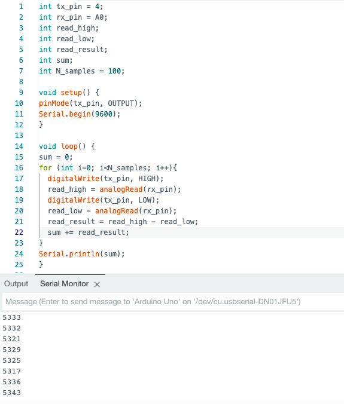
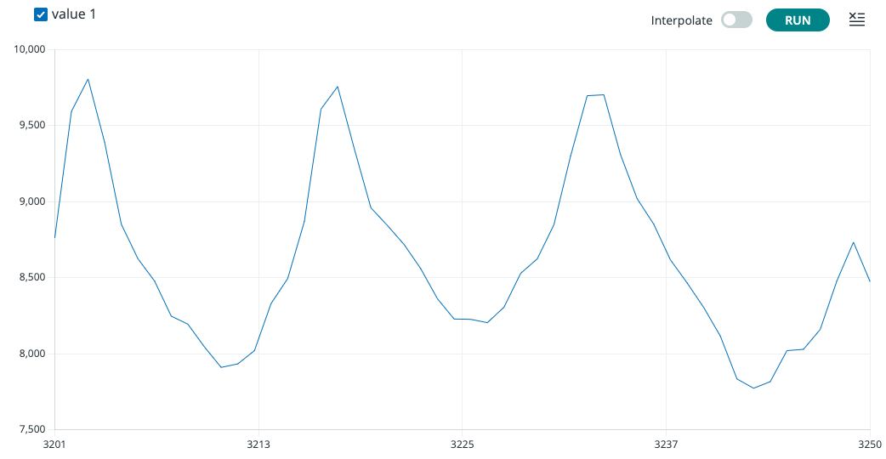
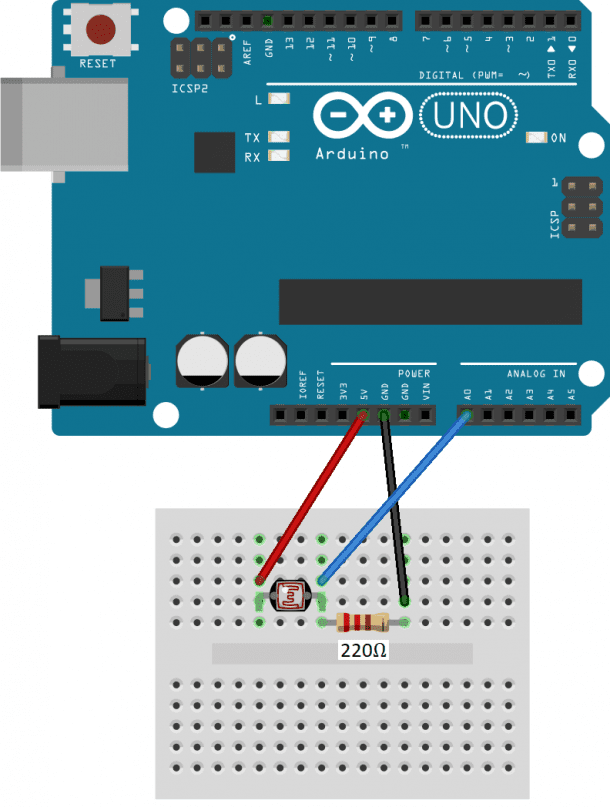
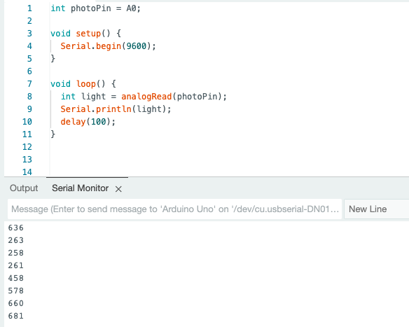
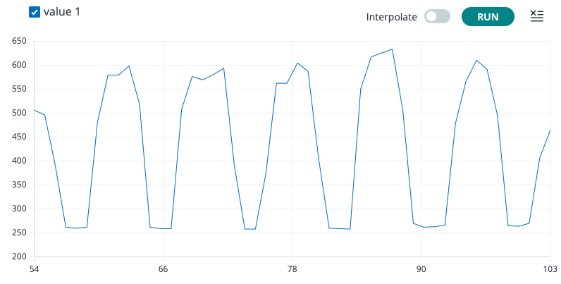
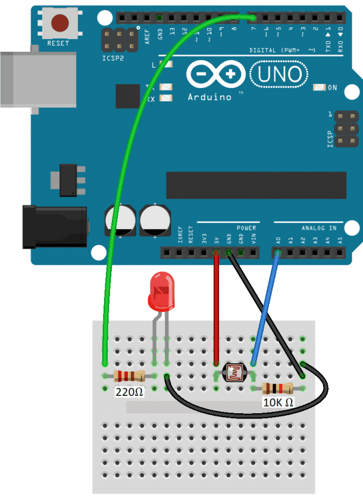
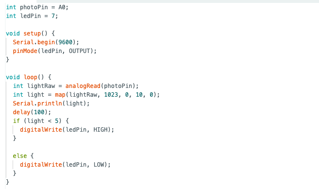

# capacitive sensor
# ---------------------------------
this week's assignment was to make a capacitive sensor. i created a simple capacitive sensor using copper plates. for my final project, i am creating a machine that folds clothes by itself. one of the ambitious features that i would like to add if possible is the ability to fold different sizes of t-shirts. in order to sense how large a t-shirt is, i wondered if it would be possible to use capacitive sensing to detect the distance from one end of the t-shirt to the other end of the t-shirt. this way, the folding machine could adjust its size to fit the t-shirt.

here is the code i used to sense the distance between the two copper plates.

using the serial plotter, i was able to plot a graph of the distance between the two copper plates. although not perfect, i got the sense that it was a fairly accurate way of measuring distance. however, it only functioned for distances up to approximately 15 cm. here is the graph plotted using the serial plotter.

# light sensor
# ---------------------------------
i decided to experiment with some other sensors. one avenue that i wanted to explore for my final project was the ability to automatically detect whether a t-shirt had been placed on my folding machine or not and then fold the t-shirt automatically. i imagined that one way to do so could be by detecting how much light was being sensed on the other side of the folding machine. so, i experimented with creating a light sensor. this is how i wired the photoresistor.

this is what it looked like when i wired it.

here is the code i used. the variable "light" shows how much light is being received by the photoresistor.

i wondered how accurate the photoresistor was. i turned off all the lights in the room. initially, i tried using the flashlight on my phone to test how sensitive the photoresistor was. but on my iphone, i could only turn my flashlight onto four levels of brightness. so, i was unable to see if the photoresistor could detect small changes in light and whether those changes mapped onto the "light" variable in a linear fashion. i downloaded an app on my phone that let me adjust the brightness of my flashlight more finely and tried again. this is the graph plotted using the serial plotter where i am changing the light from bright to dark and back repeatedly.

# sensing light and controlling light
# ---------------------------------
i could imagine creating a simple tool that turns on lights when it's dark and turns them off when it's bright. i tried to create a simple non-trivial version of something like this by connecting an led to my light sensor.

here is the code i used. here, i am "mapping" the reading of the photoresistor onto a range from 0 to 10 because i realized that different photoresistors end up having vastly different readings. i am unsure why that happens.

here is a video of the led turning on and off depending on whether i am shining a flashlight on it or not.